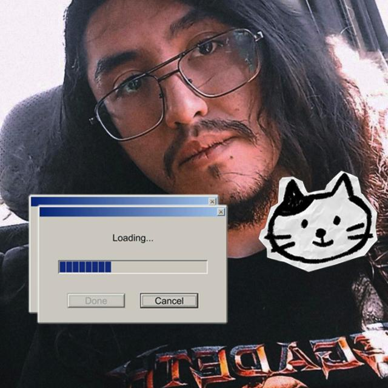

Renato Campos González — Tecnólogo en Telecomunicaciones
Correo: Renaxd13@gmail.com | Fono: +56 9 5702 8226
Edad: 23 años | Nacionalidad: Chilena | Ubicación: Santiago, Chile
GitHub: github.com/N4t0-tech | Instagram: @its._rnto
Persona responsable, puntual y con excelente capacidad para el trabajo en equipo. Experiencia en desarrollo de software, redes de telecomunicaciones y sistemas de seguridad electrónica. Conocimientos en desarrollo web full stack, aplicaciones móviles, configuración de servidores, routers y switches Cisco, así como en sistemas de CCTV, IoT y domótica. Con disposición constante para aprender nuevas tecnologías que fortalezcan mis habilidades profesionales.
Practicante Tecnólogo en Telecomunicaciones — Empresa de Desarrollo de Software
Altech Limitada — Santiago, Chile | 2024
Practicante Técnico en Telecomunicaciones
Grupo SSA S.A — Diciembre 2022 - Marzo 2023